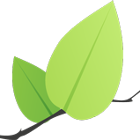
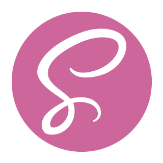
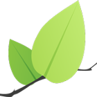
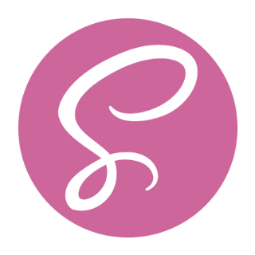

O aplikacji
Politechnika Poznańska to wiele budynków porozrzucanych po prawie całym mieście.
Przedstawiamy mapę, która pomoże Ci się w nich zorientować
i ułatwi znalezienie miejsca zajęć, spotkania czy konferencji.
Cel projektu
Tworząc aplikację, chcieliśmy doskonalić naszą znajomość technologii front-endowych oraz umiejętność pracy w grupie. Gotowy produkt kieujemy przede wszystkim do nowych studentów Politechniki.
Repozytorium
Cały kod aplikacji jest publicznie dostępny na GitHubie. Każdy może zobaczyć, jak została zrobiona, zgłosić problemy i sugestie a nawet wysłać pull requesta z własnymi propozycjami zmian.
Wykorzystane technologie
Aplikacja powstała z użyciem Angulara, a wyświetlenie map zapewnia Leaflet.js. Korzystaliśmy też z Node'owych narzędzi do automatyzacji pracy.
 




Zespół
Akademickie Koło Aplikacji Internetowych
Jesteśmy kołem naukowym działającym na Politechnice Poznańskiej, interesujemy się wszystkim, co związane z web developmentem. Organizujemy konferencje, warsztaty i inne wydarzenia, a także rozwijamy własne grupowe projekty.
Członkowie zespołu

Tomasz Gil
Marcin Ławniczak
Mikołaj Rozwadowski
Rafał Rudol
Marta Sitkowska
Mateusz Stempniewicz